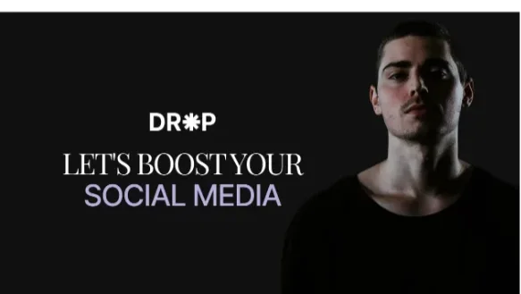
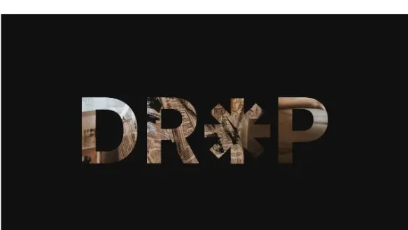

Fictitious brand, built as a training brief · Figma file and prototype open
DROP is a digital media marketing agency that doesn't exist: custom strategies, real results, small businesses growing online. Inventing the client was the point, with no stakeholder to hide behind, every decision on the page had to be one I could defend out loud.
So the exercise ran like a real engagement. Competitor research first, then identity, then a ten-fold homepage at two breakpoints, then a clickable prototype, with reviews in between. The design question was never “what does DROP do”, it was what does a visitor need to believe in eight seconds, and can I prove why I answered it that way.
I pulled the top three agencies from Influencer Marketing Hub and the top three from a story in The Hindu, then read their homepages as structures rather than as visuals: what comes first, what gets proven, where the ask sits.
{{ e.body }}
{{ p.body }}
A brand with no history has nothing for a visitor to hold onto, so I wrote the founder's journey: the struggle, and the decision to back young entrepreneurs through a social-service initiative. That became the “Ignite your dreams” fold, the one section on the page that isn't selling anything. It's the reason the rest of the page feels like a company instead of a template.
Empowering entrepreneurs to soar.
DROP believes in dreams, so we support emerging visionaries with resources, mentorship, and game-changing opportunities.
Ignite your dreamsBlack and white backgrounds gave me a minimalist canvas so the bold elements could carry the personality. Inter does the work; Playfair appears only where the page needs a human voice. One accent per fold, never two.
Periscope
See how we created a base of high value keywords to power Periscope's growth.
Underline-only fields. No boxes, no fills, on a page this dense, a box around every input reads as clutter, and the line alone still says “type here”.
A link to DROP gets pasted into Slack, WhatsApp and LinkedIn long before anyone opens it, so the share card is a real design problem rather than an export setting. Nine explorations on one black canvas, everything variable except three constants: the DR✳P mark, a serif headline in white, and exactly one word in lavender.


Two of nine. The rest of the sheet is in the Figma file.
Every fold changes surface, black, desert white, lavender, sage, so someone scrolling fast still feels rhythm instead of one long page. One accent per fold, never two, and the ask repeats exactly twice: mid-page at fold 04 and at the contact form. The 375px version re-stacks the same folds rather than dropping any of them.
The whole page is clickable in Figma, hovers, dropdowns and the scroll behaviour included.
{{ l }}
Visual confidence isn't decoration. It's what makes people trust the rest of your thinking, and I came out of this able to defend every fold.